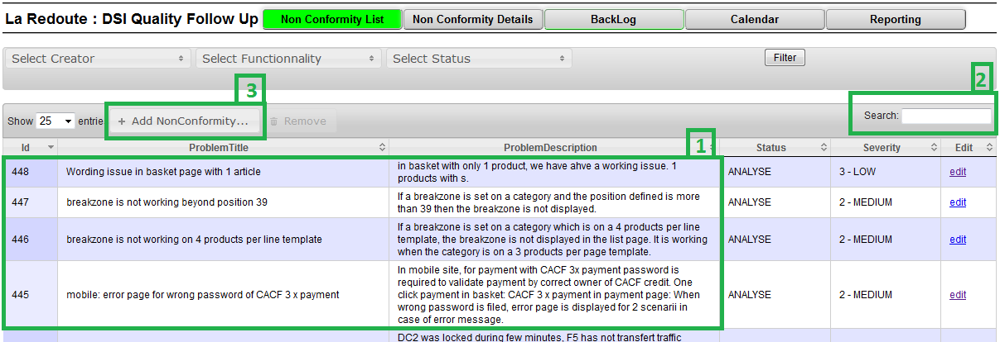
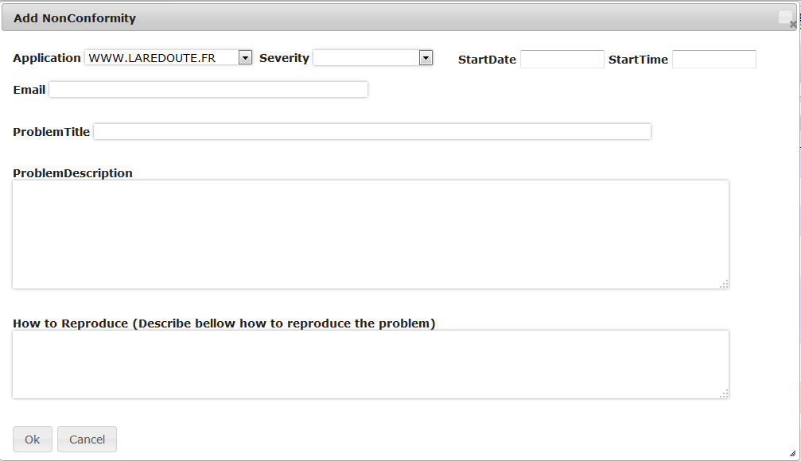

Documentation
Saisie d'un incident
Vérification des derniers incidents
La page d'accueil de l'application liste les derniers incidents saisis.
Vous commencez par contrôler si l'incident a déjà été saisi par un autre utilisateur.
- L'incident est déjà présent dans la liste.
- Le champ recherche permet de s'assurer que le ticket n'existe pas encore
- Après ces vérification, vous cliquez sur le bouton d'ajout d'incident

Formulaire d'ajout d'incident
La langue préférée pour la saisie des incident est l'anglais.
- Application Entrez ici le site concerné
- Severity Importance de l'incident, High : impact important sur les commandes.
- Start Le moment où l'incident à commencé, date du jour si le début est inconnu
- Email Entrez ici votre email, vous pouvez en mettre plusieurs séparés par des ;
- ProblemTile Entrez ici un titre court et explicite
- ProblemDescription Entrez ici le détail du problème rencontré, précisez le résultat attendu
- How to Reproduce Entrez les étapes permettant de reproduire le problème, précisez les produits ou comptes clients si nécessaire

Suivi des incidents
Les incidents que j'ai saisi
Connaître le contenu d'une release